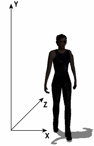

Similarly to the ordinary actors, you define 3D actors by creating a simple definition files. These files use the .act3d extension and use the same syntax as other WME files. This is an example of a 3D actor definition file:
ACTOR3DX
{
NAME = "trinity"
CAPTION = "Trinity"
INTERACTIVE = TRUE
SCRIPT = "actors\trinity\trinity.script"
SCALE = 180
DROP_TO_FLOOR = TRUE
;--- velocities
VELOCITY = 70.0
ANGULAR_VELOCITY = 400.0
;--- external data
MODEL = "actors\trinity\trinity.x"
FONT = "fonts\outline_red.font"
CURSOR = "sprites\arrow.sprite"
SHADOW_MODEL = "actors\trinity\trinity_low.x"
SHADOW_TYPE = "stencil"
;--- real-time shadow settings
LIGHT_POSITION { -40, 200, -40 }
SHADOW_COLOR { 0, 0, 0, 128 }
;--- simple shadow settings
SHADOW_SIZE = 12.0
SHADOW_IMAGE = "actors\trinity\shadow.png"
;--- effect files assignment
EFFECT
{
MATERIAL = "chrome_buckle"
EFFECT_FILE = "effects\shine.fx"
}
;--- animation settings
ANIMATION
{
NAME="idle"
LOOPING=TRUE
}
ANIMATION
{
NAME="walk"
LOOPING=TRUE
EVENT
{
FRAME = 4
NAME = "footstep"
}
EVENT
{
FRAME = 16
NAME = "footstep"
}
}
}
Most of these properties are optional. WME tries to use reasonable default
values for them.
The first block defines the usual properties, name, caption, interactivity and script assignment. You should already know these. If not, take a look at the Actors chapter.
The SCALE property affects the overall scale of the character. You will typically use this property if your character model uses different scale than your scene models, but the scaling can also be changed dynamically at runtime to achieve some game effects (shrinking characters, dwarfs etc.). This property also automatically modifies the walking velocity.
The DROP_TO_FLOOR property specifies that the actor is always standing/walking on the walkplane, no matter what its original Y coordinate was. You may need to set this property to FALSE for things such as birds or butterflies.
Speaking of velocity, it's defined by the following two properties. The VELOCITY property specifies the walking speed, while ANGULAR_VELOCITY specifies how fast the character turns.
Following section defines references to external files, FONT and CURSOR properties are standard ones.
MODEL property is new to 3D characters. It should point to a Microsoft X model file (.x). There can be multiple MODEL lines in the actor definition file. This allows you to merge animations from multiple files. Note: some 3D packages don't allow you to name animation sets in X files, they export nameless animation sets only (Blender, for example). In that case the animation name defaults to the name of the X file.
The next few properties are dealing with character shadows. WME supports several types of shadows. Using the SHADOW_TYPE property you specify which type of shadow should be used by this actor. This property can be assigned the following values: "none", "simple", "flat" or "stencil". The default value is "stencil".
If you use flat shadows or stencil shadows, you can define the color of the shadow (this is usually unnecessary) and more importantly the position of the light source (LIGHT_POSITION). This position is defined relatively to characters position and defines how long the shadow is and to which direction it's being cast. The property is defined by X, Y and Z coordinates of the light which casts the shadow. See the picture below for an example:

If you use simple shadows, you will need the following two properties. The
SHADOW_SIZE property defines the size of that black
blob, while using the SHADOW_IMAGE you can change
its appearance. If you don't specify the shadow image, WME will use a default
one. Please make sure you specify proper shadow size even if you don't
explicitly use simple shadows. Remember that WME can fall back to simple shadows
if user's hardware doesn't support flat or stencil shadows.
The optional SHADOW_MODEL property specifies a special low-polygon version of the character model. This model is used for generating stencil shadows. If your character model is very detailed, you'll need to create a low-poly shadow model, otherwise stencil shadows would reduce the performance of your game. Note that the low-poly model must use exactly the same bone structure as your main character mode.
The last large section of the file deals with the animations. This is a big difference compared to 2D characters. Instead of several
small animation files all the animations are predefined in the X files. Each X
file can contain one or more animation sets. For example, your actor's X model
could contain animation sets called "walk" and "idle". By using this name you can reference the animations later from game scripts when
calling the PlayAnim
method. There are few special (reserved) names for standard animations, namely "Walk", "Idle",
"Talk", "TurnLeft" and "TurnRight". These animations are used by the engine automatically.
The EFFECT blocks allow you to assign effect files (advanced material definitions, described here) to sub-meshes of the actor model. You define the sub-mesh material name (MATERIAL) and the effect file to be assigned to this sub-mesh (EFFECT_FILE). The material name defaults to the name of the texture assigned to given sub-mesh (without path or extension). For example, if the head of your actor model uses texture called "textures\joe_head.png", the sub-mesh is internally called "joe_head".
You can specify multiple EFFECT blocks, if you need to assign effect files to several sub-meshes of the actor model, but any of the EFFECT blocks must be placed AFTER the MODEL definitions.
The ANIMATION blocks in the actor definition files allow you to define additional options for these animation sets. Note that the animation definitions are optional (unlike the previous WME versions using the MS3D format).
The animation properties start with name of the animation (NAME). The name specifies the animation set whose properties you're going to set.
The next property is called LOOPING. It specifies whether this animation loops or plays only once. Some 3D modeling packages can export the "looping" information directly to X files, some can not. In the latter case you will need to specify the LOOPING property in the actor definition file.
You can see the first animation block above contains two nested blocks named
EVENT. Using these blocks you can trigger a script
event whenever a certain frame of animation is played. Experienced WME users
already know this from ordinary sprites. The example above specifies that frames
4 and 16 trigger a script event called "footstep". You can use these
animation-triggered events in a script for various animation-dependent actions.
There is a semi-experimental support for collision detection between multiple actors. It's only supported for scenes using the "2D pathfinding" option and the function is exactly the same as for 2D actors (described here). So to recap, you need to add the BLOCKED_REGION and WAYPOINTS sections to the 3D actor definition file, and the scene must be configured to use 2D-based pathfinding. Please note that the private blocked region is scaled automatically according to scene scale level in the point where the actor is standing. Therefore it might be necessary to define scale levels for your scene, even though normally it's not needed for 3D characters.